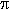

Consider another scenario. Your manager shows you this program:
#!/usr/bin/perl -w
# See whether Perl can add?
use strict;
my $total = 19.08 + 2.01;
my $expected_total = 21.09;
print "The total is \$$total\n";
print "The expected total is \$$expected_total\n";
if ($total == $expected_total) {
print "They are equal.\n";
} else {
print "They aren't equal.\n";
}
When he ran it, this is what he saw:
The total is $21.09 The expected total is $21.09 They aren't equal.
(You might not get exactly the same output on your machine. But there is a similar program that "fails" in the same way.)
Your manager wants you to stop using Perl, since you're developing a financial application and Perl clearly has serious bugs in its ability to handle basic arithmetic.
One of your co-workers pops in to say that he can fix that program. In a moment, he's re-coded the comparison to look like the following. "Now it works!" he says. "I use this trick all the time in my scripts." What do you think?
# A better way?
if ($total =~ /$expected_total/) {
print "They are equal.\n";
} else {
print "They aren't equal.\n";
}
This prints:
The total is $21.09 The expected total is $21.09 They are equal.
What went wrong? The professor, manager, and co-worker all made the mistake of confusing a numeral - a number's representation - with the number itself. In the Professor's case, she assumed that the number she was writing as 99.9999... was somehow different than 100.(Don't believe that 99.9999... is exactly equal to 100? Consider that 0.3333... times 3 is 0.9999... But 0.3333... is one-third, and three times one-third is one. So 0.9999... is the same thing as 1.0, and therefore 99.9999... is 100.)
Unfortunately, your manager can't count on Perl to know how to add a few numbers. It's not Perl's fault; this problem affects every computer and every programming language in one way or another. The truth is, whenever you add, subtract, multiply, or divide in Perl, you're not using numbers. You're using numerals, and therein lies the difference.
Remember the number line? Infinitely long, every real number is found somewhere along this line. Stand at the zero position, with one, two, three falling neatly in order on one side, negative one, two, and three on the other. If you look closely, you can see non-integers like 1.5 and two-thirds.  is in there, so is e, and one trillion. If you squint, you can see a googol (10100 ) in the distance, and beyond that a googolplex (10googol). Somewhere near here, still in sight, is the point which represents your age, slipping away so slowly that it takes a whole year to crawl from one integer to the next. For most of us nonmathematicians, these are all the numbers we'll ever need or want. These are the numbers that most people mean when they think of arithmetic. But what we actually use for arithmetic on a computer is a numeral, which isn't always the same.
A numeral is merely a representation of a number. Hardly anybody makes this distinction between "number" and "numeral" in casual usage, or even in documentation. I certainly don't, and I don't expect anyone else to do so. But I've tried to make it clear in this article which I mean, although I occasionally use standard computer science terms like "double precision number," which is actually a numeral. Alas.
Of course, we all work with common numbers like 29, 19.95, and -40, and even less common ones like 5.004, 6.022 x 1023, and 98.6. But few of us work with itself, for example. Instead, we call upon one of its close friends, like 3.14159, knowing (or forgetting) that we are missing the mark by a tiny bit. (Not that it usually matters in everyday life. If you used that value in place of to calculate how long a string you'd need to encircle the moon's equator, you'd be off by just a few meters - and your error would likely be dwarfed by the fact that the moon isn't perfectly round.) Similarly, when we work with the number two-thirds, we are usually satisfied with 0.66667 or so; with many numbers like the 6.022 x 1023 I mentioned earlier, we intentionally retain only a few significant digits because that's all we need.
These numerals don't behave the same as the numbers they represent. If you triple 0.66667, you get 2.00001. That's not two, even though the professor's students might disagree.
Computers work with different numerals, but in a similar way. If we want to store the number 7 exactly in a computer's memory, that's not hard to do. But most real numbers need to be stored as an approximation, and this affects the accuracy of our results.
How accurate is Perl? That depends upon your machine, and how your C compiler implements double precision numbers. But that should be enough accuracy for all everyday applications. If you need more accuracy than Perl provides by default, check out the Math::BigFloat module.
Although your computer may store numerals differently than mine, virtually all modern computers use the same technique. They convert the number to an internal binary form which is more easily manipulated than our familiar decimal notation. And, in the same way that we round off two-thirds to 0.66667 or so, the computer has to round off numbers like three-tenths.
At first glance, this may seem surprising. A simple number like 0.3 shouldn't need to be rounded, should it? But even though 0.3 seems simple in our familiar decimal notation, it's not so simple in binary. In binary, the first digit after the decimal point (the phrase "binary point," is more accurate, but we'll let it slide) is not the "tenths place", but the "halves place". The next bit is the "fourths", and the third is the "eighths". The binary form of 0.3 is 0.0 1001 1001 1001 1001 1... - an infinitely repeating sequence. And in much the same way that the decimal 0.66666... is normally rounded off for convenience, the value for 0.3 is rounded off inside the computer. Can a program be made to work with endlessly-repeating numbers without rounding them off? Yes, but it would be slower, take more memory, or both. In particular you can use the bigrat.pl library file bundled with Perl to perform arithmetic with fractions.
The problem isn't that our computers use binary, but that they use only a small number of bits to represent numbers. That means that some numbers have to be represented imprecisely - and some of those numbers surprise us because they happen to have concise representations in base 10.
So, what are we going to tell your manager? Now that we've seen that this sort of thing affects all of the ways in which we do arithmetic, we can point out that this isn't the fault of Perl; a similar program can be written in C or Fortran or Pascal, or any other language for that matter. And a similar confusion even happens to human beings, as the professor's class learned. It's a fundamental consequence of performing arithmetic with numerals.
But Perl uses another kind of numeral as well, and that's what your co-worker was using with his regex test. In most computer languages, there is a strong distinction between numbers (actually, numerals) and strings. But they're used interchangeably in Perl, with conversions triggered automatically as needed. That is, Perl will convert the string "10" to the number ten (or, at least, its numeral) and back again as needed. (Worried about efficiency? Don't be. When Perl performs the conversion, it saves the result, so the computation is only performed once.) So, with Perl, we now have numbers, computer numerals (used internally), and numbers-as-strings. Converting from a number-as-string to Perl's internal format (and back) isn't always precise.
For the co-worker's regular expression, Perl implicitly converted both numbers to their string forms.
$total =~ /$expected_total/
# Both are used as strings
Then, Perl interpreted $expected_total as a regular expression. Eek!
$total =~ /21.09/
If you know regular expressions, you'll see why this matches the string form of $total, which is 21.09. Unfortunately, it will also match some erroneous values, such as 121.093 and 21309, among many others. This solution is the scariest kind of programming: completely superficial, and implemented without understanding of where it will go wrong.
But your co-worker's flawed approach could lead to one possible solution. When Perl converts a numeral to a string, it naturally rounds the value a little. (If you wish to control exactly how your numbers are converted to strings, use the sprintf() function.) We could use this to our advantage, and create something like this.
# string comparison
if ($total eq $expected_total) { ... }
This way, Perl converts both numbers to strings, then checks whether they're identical. Unfortunately, this is a relatively slow computation. Worse, it assumes that we want to call two numbers the same if they both turn into the same string on the current machine, which may use a different numeral-to-string conversion than other machines. Not very portable, and therefore not very reliable.
If you need to compare two numbers in a "fuzzy" way, in which small differences are allowed, here is one way to do that.
if ( $total > $expected_total - 0.0000001
and $total < $expected_total + 0.0000001 ) {
...
}
This makes it clear just how fuzzy the comparison can be. But we can use a little math to simplify this.
if (abs($total - $expected_total) < 0.0000001) { ... }
In this case, we're seeing just how different these numbers are, and requiring that the absolute difference be less than a certain amount. This allowed difference traditionally goes by the name epsilon, so you might see that name used in snippets like the following:
# Defined once at top of script
use constant EPSILON => 1e-7;
if (abs($total - $expected_total) < EPSILON) { ... }
If the use constant pragma doesn't work, you're using a version of Perl prior to 5.004, and should upgrade.
To be sure, it's more acceptable to define epsilon in a way that takes into account the scale of the numbers being compared. And you may want to put the comparison into a subroutine, like this: (The ($$) in the first line of close_enough() is a prototype. This one means that the subroutine expects two arguments, both scalars. More information about prototypes is available in the perlsub documentation.)
sub close_enough ($$) {
my($expected, $actual) = @_;
if ($expected) { # allow for 0
abs( ($actual-$expected) / $expected ) < EPSILON;
} else {
abs($actual) < EPSILON;
}
}
if (close_enough($expected_total, $total)) { ... }
Note that the order of parameters is important, since now epsilon is used as a fraction of the expected value; this is actually a different comparison rule than the one used before.
But there's actually a better way to implement financial applications like the one shown previously. Don't be misled by the decimal point: An amount of money like $21.09 is actually an integral number of pennies. If you do the calculations with exact integers, putting in the decimal point only at output time, you'll reap the benefit that integers are more accurately represented than real numbers in computer numerals.
In the program below, the line $num = sprintf "%03d", $num makes the integer $num into a string with at least three digits. Leading zeroes are added as needed, so 2001 becomes "2001", 20 becomes "020", and 2 becomes "002". That way, we can add a decimal point to get "0.02".
#!/usr/bin/perl -w
# A better way to work with financial values
use strict;
sub money ($) {
# Given a non-negative integer number of pennies,
# returns that figure as a dollars-and-cents
# amount, like '$12345.67'.
# Assign the first (and only) argument to $num
my $num = shift;
warn "Bad amount of money: $num" if $num < 0;
# Make $num into a string
$num = sprintf "%03d", $num;
substr($num, -2, 0) = "."; # add the decimal point
return '$' . $num;
}
my $total = 1908 + 201; # integers now
my $expected_total = 2109;
print "The total is ", money($total), "\n";
print "The expected total is ",money($expected_total),"\n";
# Comparing numbers of pennies
if ($total == $expected_total) {
print "They are equal.\n";
} else {
print "They aren't equal.\n";
}
Armed with this knowledge, you should find it easier to get the answers that you expect from your Perl programs.
_ _END_ _